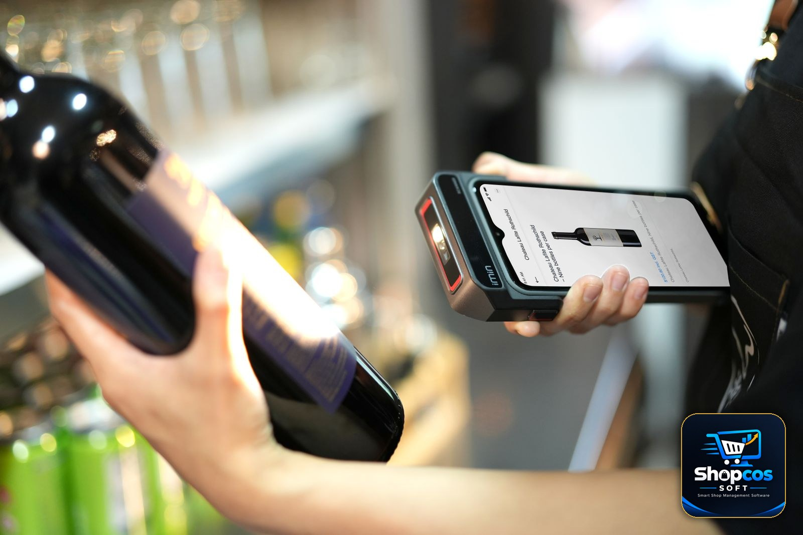
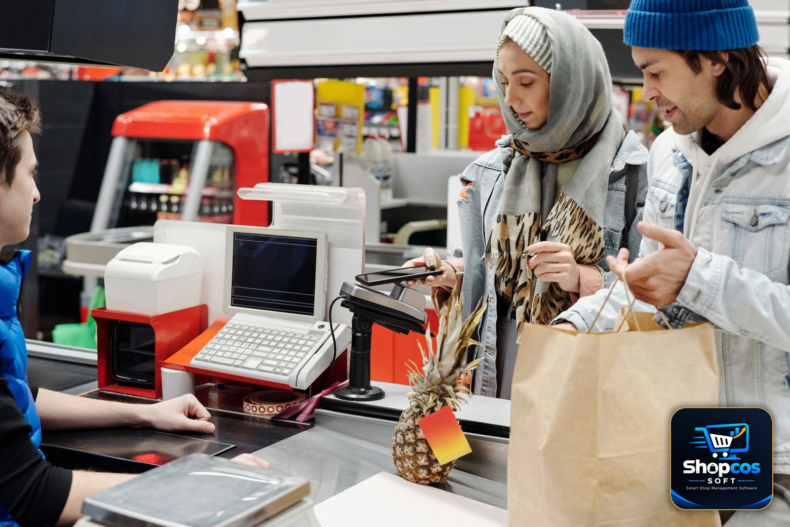

Every retail shop has the same evening scene. The counter is crowded, the cashier is adding figures on a calculator, a customer changes her mind about one item, and the whole addition starts over while the queue behind her grows. The shop is doing fine — customers keep coming — but the counter is the bottleneck, and every minute a customer spends waiting is a minute they spend deciding to shop somewhere else next time.
POS software for retail shops exists to fix that counter. POS means "point of sale" — the place where the sale happens. The software is the program that runs that sale from first scan to printed bill, and, if it is built properly, the same single entry updates the stock on the shelves and the customer's khata at the same moment. This guide covers the 11 features that are actually worth paying for, the 5 that sound impressive in a sales demo and matter far less in real life, what the whole setup costs in Pakistan, and a 10-point checklist to use before you hand over any money.
What POS Software for Retail Shops Actually Is
Strip away the sales talk and POS software for retail shops does one job: it turns a sale into a record — a bill for the customer, less stock on the shelf, and, if the sale was on credit, an entry in the customer's khata — in a single action at the counter. A good system does that in under a minute for a normal basket, prints a clean receipt, and tells you at closing time exactly what you sold, what you earned, and who still owes you.
That is a bigger job than it sounds, because a retail counter is not a simple place. A kiryana sells loose atta by the kilo. A clothing shop sells one kurta in four sizes and three colours — which is twelve stock items, not one. A mobile shop sells individual handsets, each with its own IMEI number. A wholesale counter sells by carton and by piece at different rates. The software has to handle all of that without the cashier fighting it, because the moment the cashier has to think about the software, the queue stops moving.
The hardware is the easy part to picture: a computer or tablet at the counter, a barcode scanner, a thermal printer for receipts, and a cash drawer. The software is what makes those pieces work together — and it is the software, not the hardware, that decides whether the system saves you time or wastes it. A cheap scanner with good software will beat an expensive scanner with bad software every single day. Our guide to the barcode system for small shops explains the hardware side in detail; this guide is about judging the software.
The 11 Features Worth Paying For
Software sellers love long feature lists. Most of the list is decoration. These eleven are the ones that decide whether you will still be using the system in a year — test each of them with your own items and your own customers before you buy.
1. Fast barcode billing — scan, don't type
This is the feature the whole system is named after, and it is still the one that matters most. The cashier scans an item, the name and price appear, and the bill builds itself. No typing prices, no memorising rates, no "bhai, is ka rate kya tha?" shouted across the shop. A cashier scanning barcodes finishes a normal 10-item basket in under a minute; typing the same 10 prices by hand takes three to four minutes, and every typed price is a chance to type the wrong one. If the software cannot scan fast — if there is a lag after every beep, or if it needs the mouse for every step — walk away. Speed at the counter is the product.
2. Stock that drops itself
Every sale should reduce the stock automatically, in the same second the bill is made. That is the difference between a billing program and a POS system. When stock drops itself, you always know what is on the shelf without counting it, and the software can warn you before an item runs out instead of after a customer asks for it and you have to say "khatam ho gaya." Test this one properly: make a sale of two units, then check the stock screen. If the number has not dropped, the system is a calculator with a logo, not a POS.
3. Expiry and low-stock alerts
A retail shop loses money in two quiet ways: items that expire on the shelf, and items that run out on the busiest day of the week. Good POS software watches both. It should warn you when an item is near its expiry date and when any item falls below the minimum level you set — and it should show those warnings on the main screen, not buried in a report nobody opens. For medical stores and food items, the expiry alert alone can pay for the software; our guide to reducing expired-product losses works out how much dead stock actually costs a shop.
4. Khata and udhar built in — not bolted on
In a Pakistani retail shop, a large share of sales is on credit. The customer takes the goods today and pays on Friday, or at month end. If your POS cannot record an udhar sale straight into the customer's ledger, your staff will keep a separate register book — and you will have two systems that never agree. The ledger must be inside the same software: the sale lands in the customer's khata automatically, the running balance updates, and a statement goes to the customer's WhatsApp in one tap. Our guide on how to manage udhar and khata covers the daily discipline that makes the ledger work.
5. Works 100% offline
Load shedding and weak internet are a daily fact in Pakistan, not an exception. If the software stops working when the internet drops, your counter stops with it — on the busiest evening of the week, in front of a queue. The billing screen, the stock, the khata and the printer must all work with no internet at all. Anything the software needs the internet for — backups, updates, reports on your phone — should be a bonus, never a requirement. Our comparison of offline vs online billing software explains why this is the first question to ask any seller.
6. A Urdu interface your staff can actually read
The person using the software is your cashier, not an IT graduate. If the screens are English-only, your staff will avoid the system and quietly go back to the calculator and the register book within a month. Buttons, product names, the printed bill and the customer's statement should all be readable in Urdu by the people who work your counter. When you test a system, hand it to your actual cashier for ten minutes and watch. If he has to ask you what a button means, the interface has already failed.
7. Every payment method your customers use
Cash is still king at a Pakistani counter, but it is no longer the only payment. Customers pay by card, by JazzCash and Easypaisa, and by bank transfer — and the software should record each one separately, so the day-closing report shows exactly how much cash is in the drawer and how much came in digitally. If the system only handles cash, your staff will keep a second record for digital payments, and the two records will drift apart by the end of the week. Ask the seller: "can I see today's cash, card and mobile-wallet totals separately, on one screen?"

8. Day closing and sales reports you can read in two minutes
At closing time you need four numbers: what you sold today, what you earned, what is still owed to you, and what is running low. A good POS shows all four on one screen, without you having to build a report. If the reports need an accountant to read them, they will never be read. The best test is simple: after a day of real sales, open the day-closing screen and see if you understand it in two minutes. If you cannot, the reporting is decoration.
9. Barcode labels and weighing-scale support for loose items
Half of a kiryana or grocery counter is loose stock — atta, daal, sugar, spices — sold by the kilo, not by the packet. The POS must handle that: connect to a weighing scale, or let the cashier enter a weight and calculate the price, and print barcode labels for items you pack yourself. A system built only for packed, barcoded goods will leave half your counter outside the system. Our guide to grocery store POS software covers the weighing-scale and loose-item workflow in detail.
10. Staff logins and permissions — who did what
Two people work the counter and money goes missing. Without staff logins, you will never know which shift it was. Each cashier should have their own login, and the owner should be able to see who made which bill, who gave a discount, and who voided a sale. Staff should see only what they need — the billing screen — while purchase rates and profit figures stay visible to the owner only. This one feature prevents more arguments than any other in a shop with staff, and it is the first thing our guide to preventing staff theft in retail recommends.
11. Daily automatic backup — on your own machine
Your entire shop's record — every bill, every stock figure, every rupee of udhar — lives in this software. If the computer dies and there is no backup, the record dies with it. The software must make a backup automatically every day, to a file you can see on your own PC, plus a copy on your own Google Drive if you want one. Ask the seller the one question that matters: "if your company closes tomorrow, does my data still open?" The honest answer should be yes. Backup is not a feature to set up "later" — the first evening you use the software, check that the backup file exists and that you know where it is.
The number to remember: a cashier scanning barcodes finishes a 10-item basket in under a minute; typing the same 10 prices by hand takes 3–4 minutes. Across 100 customers a day, scanning saves roughly 3 hours of queue time — three hours your customers spend buying instead of waiting, and three hours your cashier spends serving instead of typing.
The 5 Features That Sound Good — But Matter Less
Every sales demo has a second half: the features that look wonderful on a big screen and get used twice. None of these are bad features. They are just not the reason to choose a system — and a seller who leads with them is usually hiding a weak counter experience.
- Fancy dashboards and graphs. Pretty, and you will look at them twice. The billing screen and the stock screen are where you will live.
- "AI insights." Useful later, once the basics work — which items sell fastest, which customers are overdue. Never the reason to choose a system, and never worth paying extra for in year one.
- Multi-branch sync. If you have one shop, you are paying for a feature built for chains. Buy it when you open the second shop, not before.
- Customer loyalty points. A nice idea for a supermarket. For a neighbourhood shop where you already know every customer by name, the khata and a fair price do more than points ever will.
- Cloud-only access. Being able to see your sales from your phone is genuinely useful — but if the whole system needs the internet to bill a single customer, the cloud has become a weakness, not a feature. Offline first, cloud as a bonus.
What POS Software for Retail Shops Costs in Pakistan
Three kinds of price exist, and they are not the same deal. Here is the honest comparison, using the prices shops actually pay in Pakistan in 2026:
| What you pay for | Typical price in Pakistan | What you actually get |
|---|---|---|
| Free phone app / "free" POS | Rs 0 to install | Basic billing on a phone. Small screen, no proper stock or khata, advertising, and your data sitting in someone else's account. Fine as a start; a risk as a system. |
| Monthly subscription software | Rs 1,000–3,000 per month | Full features while you pay. Rs 2,000 a month is Rs 24,000 a year and Rs 72,000 in three years — and the day you stop paying, the software stops opening. |
| One-time software (lifetime licence) | Rs 25,000–40,000 once | Full features, yours forever. shopcos soft, for example, is Rs 40,000 once with a 7-day free trial — less than two years of a Rs 2,000 monthly subscription, and after that the software is yours whether you ever pay another rupee or not. |
Then there is the hardware, which is a one-time cost on top of the software. A decent barcode scanner costs Rs 6,000–12,000, a thermal receipt printer Rs 8,000–15,000, and a cash drawer Rs 5,000–8,000. Most shops already have a computer or laptop at the counter; if you do not, any basic Windows PC will run billing software — you do not need a new machine. All in, a complete counter setup with one-time software lands around Rs 60,000–75,000, and nothing after that except paper rolls. Compare that with the subscription route: Rs 72,000 for the software alone in three years, plus the same hardware — and you own nothing at the end. Our full comparison of monthly subscription vs one-time payment works out the three-year maths in detail, and the POS software cost guide for Pakistan breaks down every hardware item.

POS Software vs Billing Software: What's the Difference?
Shops ask this constantly, because sellers use the two terms as if they mean the same thing. They do not — and knowing the difference stops you from buying the wrong one.
Billing software makes the bill. It prints a receipt with the items, prices and total, and that is its job. For a very small shop with a handful of items, that is sometimes enough. POS software is the whole counter system: it makes the bill, and the same entry drops the stock, updates the khata, records the payment method, logs which cashier served, and feeds the day-closing report. Billing software answers "what did the customer pay?" POS software answers that plus "what is left on the shelf, who still owes me, and how did today go?"
The practical rule is simple: if your shop has more than 200 items, sells on udhar, or has staff at the counter, you need POS software, not just billing software. If your shop is tiny and you are the only person at the counter, billing software can be the right start — and the better billing systems, including shopcos soft, are built so the stock and khata are already there when the shop grows into them. Our complete buyer's guide to billing software for retail shops covers the billing side in depth, and our guide to choosing the right POS software in Pakistan walks through the decision step by step.
5 Mistakes Retail Shops Make When They Buy POS Software
1. Buying on the demo, not on their own counter
A sales demo uses five clean items and a smiling presenter. Your counter uses 2,000 items, loose stock by weight, a customer arguing about a price, and a queue. Never buy from a demo. Insist on a free trial — 7 days at least — with your real items and your real customers, and judge the software on your busiest evening, not on the seller's best morning.
2. Paying for features the shop will never use
Multi-branch sync, loyalty points, AI forecasting, integrations with systems you have never heard of — every one of them sounds good and every one of them adds to the price. A single shop needs the eleven features in this guide. Everything else is a future purchase, not a present one.
3. Ignoring the offline question
Shops ask about price and features and forget to ask the one question that decides whether the counter works on a load-shedding evening: "does this bill a customer with no internet?" Ask it first, and ask for a demonstration with the Wi-Fi switched off. If the seller hesitates, you have your answer.
4. Letting the seller enter the opening stock
Opening stock — the items and quantities you start with — is your data, and entering it is how you learn the system. Shops that let the seller do it end up with a stock list nobody in the shop understands, full of wrong quantities that take months to find. Enter it yourself, item by item, over a week. It is slow, and it is the single most valuable week you will spend on the system.
5. No backup on day one
Backup is not a feature to set up "later." The first evening you use the software, check that the backup file exists and that you know where it is. A shop's record with no backup is a register book with no second copy — you have changed the medium, not the risk.
The 10-Point Checklist Before You Buy
Print this list, take it to the seller, and tick each box with a real test — not a promise:
- Scan 10 of your own items and time the bill. Under a minute, with no lag after each beep.
- Check the stock dropped after that sale — same second, no manual step.
- Make an udhar sale and confirm it appears in the customer's khata automatically.
- Switch the internet off and make a full bill, print it, and close the day.
- Hand it to your cashier for ten minutes. If he needs your help to read a button, the interface has failed.
- Print a receipt and a WhatsApp statement for a real customer and read both yourself.
- Set a low-stock alert on one item and confirm the warning appears on the main screen.
- Ask where the backup file is and open it yourself. If the seller cannot show you, there is no backup.
- Ask the total three-year cost in writing — software plus hardware plus any monthly fee — and compare it with the one-time price.
- Ask what happens if you stop paying. If the software stops opening, you are renting, not buying — and you should know that before you sign, not after.
The Bottom Line
POS software for retail shops is not a fancy till and it is not a faster calculator. It is the system that runs your counter: one scan makes the bill, drops the stock, updates the khata, records the payment and logs the cashier — and at closing time it tells you, in two minutes, how the day went. The eleven features in this guide are the test. A system that passes them will still be running your counter in a year. A system that fails three or more of them will be abandoned within a month, whatever it cost.
If you are ready to judge one properly, do the small version this week:
- Count how long your cashier takes to bill ten customers by hand — that is the queue time you are buying back.
- Write down your total udhar, properly, for the first time — that is the number the ledger has to protect.
- Take the 10-point checklist above to any seller and watch how many boxes they can tick with a real test instead of a promise.
- Try one POS system free for 7 days, with your real items and your real customers — not a demo with five fake entries.
- If the bill, the stock and the khata all move from a single scan, and the totals match at closing time, you have found your system.
Your shop already earns the money. The right POS software just makes sure you can see it, count it, and collect it — at a counter that never keeps a customer waiting. Try shopcos soft free for 7 days on your own counter, with plans starting at Rs 25,000 one-time, and judge it on your busiest evening. Questions first? Message us on WhatsApp at 0326 4025618 — Urdu mein baat ho jayegi.
Photo credits: Retail checkout counter with touchscreen register photo by Jaykumar Bherwani · Person scanning a product with a portable scanner photo by iMin Technology · Customers paying by mobile phone at a supermarket checkout photo by Jack Sparrow — all via Pexels.